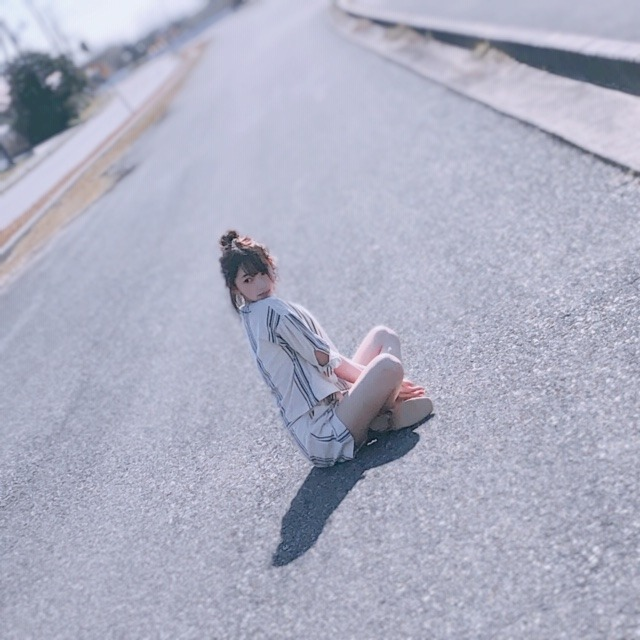
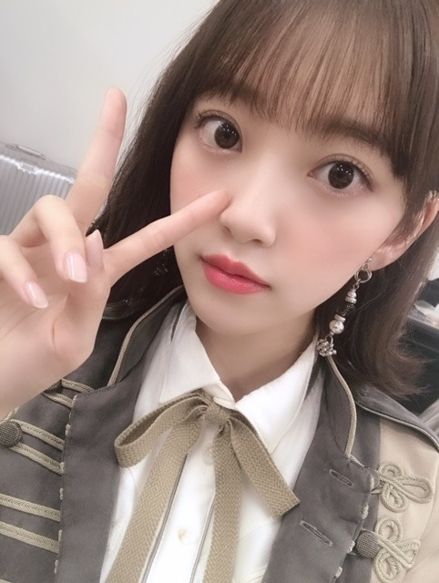

2019/0531Friどこまでも
週刊少年サンデー発売中です☺︎
天気が良くて気持ちのいい一日でした！
趣味でもよく撮るカメラを持ってみたり
芝生に寝転がったり
いろんな表情をしてます！

白のワンピースも淡いブルーのワンピースも私好みで幸せでした〜
告知
発売中「BOMB」与田ちゃん梅ちゃんと表紙
発売中「FINEBOYS」
発売中「東海ウォーカー」
発売中「TVガイドAlpha EPISODE U」
発売中「装苑」
発売中「少年サンデー」表紙
発売中「別冊spoon.」表紙
6/1「シネマスクエア」
6/2「日経エンタテインメント！」
6/8「プチコミック」
6/8「BOMB」
6/8「FINEBOYS」
6/12「ピクトアップ」
6/12「プラスアクト」
6/12「ar」初表紙
6/13「ベツコミ」清水くん、板垣くん、間宮さんと
6/19「TV LIFE」
6/20「金沢倶楽部」
6/22「MYOJO」
6/23「アップトゥボーイ」表紙
盛りだくさんで有り難いです
是非、checkしていただけたら嬉しいです！！！
発売中の装苑では清水くんと撮影をさせていただきました
山戸監督の世界観と言葉に揺られながら素敵な衣装とヘアメイクをしていただいて幸せな時間...✨

ホットギミック ガールミーツボーイを楽しみにしてくださっている皆様に、この青い淡い想いが、届きますように。
今日は20時からmステです！
でははは
2019/0527Mon頭の上に手
怖い話じゃないですよ〜
愛犬の頭を撫でるのが好きで、いわゆる頭ぽんぽんみたいな。それをすると我が家のお犬様たちは、ニコニコしてくれます。笑
女の子もよく男の人に頭ポンされるときゅんきゅんする〜みたいなのありますよね
頭って安心するポイントなんですかね
頭って大事
小さい頃に必ず自転車に乗るときに黄色いヘルメットを被らされたのも納得。

飯窪春菜ちゃん☺︎
私が話す内容にいつもカワイイ〜って言ってくれるの。笑
かわいい話は全然していないんだけど、春菜ちゃんは包容力の塊で優しくてすきです！
乃木坂工事中では、地元岐阜県から近い愛知県や三重県にロケしに行きました
お猿さんにも会いに行ってきました✨✨
お猿さんのどこがすきなの？って言われて、毎回、背丈。って応えてそれに対して、分かる〜背丈かわいいよねという共感を一度も得たことがないので共感や理解は無理に得るものじゃないなと最近学びました。
でも好きなものは好きなので、それでいいです

いつも振り確認でみんなみり愛に集まるくらいに振り覚えが良いみり愛さん
横浜アリーナのライブでAm I Loving?とゴルゴンゾーラ、2曲共一緒に歌うことができて嬉しい♡
この2曲、初披露でしたが盛り上がってくださりありがとうございました！
歌詞もメロディーも振りも衣装もとびっきり可愛くて淡い恋心を甘く甘々に歌っています。
今後のライブでも沢山披露できたら良いな
告知
発売中「BOMB」与田ちゃん梅ちゃんと表紙
発売中「FINEBOYS」
発売中「東海ウォーカー」
発売中「TVガイドAlpha EPISODE U」
5/29「少年サンデー」ソロ表紙
5/28「装苑」
5/31「別冊spoon.」ソロ表紙

純奈。笑
でははは
2019/0524Fri夢だけど夢じゃなかった
夏が近づくと、ジブリを観たくなります
いいですよね〜あの世界観✨✨✨
ほっこりします
そうそう先日、
みり愛と絢音とお泊まり会をしました
笑いっぱなしだったな〜
夜は、となりのトトロ と 耳をすませば を真剣に観ました。笑
そうそう先日、
みり愛と絢音とお泊まり会をしました
笑いっぱなしだったな〜
夜は、となりのトトロ と 耳をすませば を真剣に観ました。笑
ジブリは奥深いです

告知
発売中「FINEBOYS」
発売中「東海ウォーカー」
発売中「TVガイドAlpha EPISODE U」
5/29「少年サンデー」ソロ表紙
5/28「装苑」
少年サンデーさんの表紙に装苑さんの撮影
ほんと嬉しいー！わーいわい
是非、見てほしいです！
そして来週の31日金曜日はMステに出ます！
そして来週の31日金曜日はMステに出ます！

疲れた時は
食べて、寝る！に限るね
うんうん
では。

2019/0520Monお気づきかと思いますが夏が好きです
夏が近づくと聖蹟桜ヶ丘に行きたくなりませんか？
私はなります
だいすきなアニメ「耳をすませば」の舞台にもなっていて、一回撮影で行ったのですがあのロータリーも丘も神社も駅前もバスも全部にまったりとした時間が流れていて
頭の中にはずっと耳すまのBGMが流れていました
また行きたいな...
むしろ住みたいな
耳をすませばって夏に観るのももちろん良いけど
冬の場面もあるから冬に観るのも良くて結局一年中、旬なんだなって思いました☺︎
はぁ、青春。
私、"爽やか青春"マニアなんですよ
中学の時から青春を好いて求めすぎる傾向があってですね
河川敷でGReeeeNさんの曲を流しながら親友がカメラを回し私が演じる、自作爽やか青春CMを撮ったりしていました
今思えばただの自己満でしかなくて。たしかにめちゃくちゃ楽しかったしずっと笑ってたけど...
リアル青春をナウでしてる人達から見たら滑稽だったのかな...
休み時間に、友達(女子だけど肩車がめちゃくちゃ得意らしい)が私を肩車して校庭を練り歩いたり
他クラスを巻き込んでバイオハザードごっこをしたり
芸人さんのネタの完コピに励んだり
今思えば
自分達自ら、全然爽やか青春とは程遠い道を歩んでいたのだな...と
まあ、友達と笑った時間が宝物なのでいいんだけどね
う〜ん
もっと青春しておけばよかったぁ〜と
青春おばけになりそう〜あ〜〜ア
今、望みがあるとすればCMやドラマ...なので...
きっとかなり入り込んで熱演できるはず...
が、がんばろ...

さ、前回から始まった夏シリーズの余談？はさておき
黒髪にしました〜✨✨
若干茶色も残しつつこんなに暗い髪色は久しぶりです

髪伸びたなぁ
ミディアムボブ

そして、くすみブルーの服ばかり集めがち
今日は、愛する我が家の天使くんこと、ニコルの誕生日！
8歳！誕生日そめでとう✨(the3名様ネタ)
#ニコル生誕祭


弟のプティにも何だかんだ優しくていつもお兄ちゃんやってくれてありがとう☺︎
プティに嫉妬して最近は自分から甘えに来てくれるのが可愛すぎるし、ニコルが大好きなのは家族みんなずっとずっと変わらないよ
優しくて家族の誰かが落ち込んでたり風邪をひいてると、そっと近くに来て心配そうに顔を見てきたり寄り添ってくれるところも、犬の匂いが全くしなくてむしろいつもフローラルな香りがするところも、公園が大好きではしゃぎ回るところも全部だいすき♡
「生き物にサンキュー」で初めて地上波デビューしてVTRも作っていただいて、家族でよくニコルを囲んで見返しています。笑
長生きしてね
堀家に来てくれてありがとう！
今日は19時からネプリーグ です☺︎
もっと勉強してまた参戦できますように♪
では
2019/0519Sunトマトの力を信じます
夏が近づくと、奥多摩に行きたくなります
なりませんか？
私はなります
一回ロケで行ったのですが、自然が綺麗で美味しいハンバーグもあって地元の岐阜県に近いものを感じ虜になりました
日焼けは怖いけど
でも外に出たい
日焼け対策万全で今年も夏を楽しめたらと思います
太陽って素晴らしいと思うんです
(急に)
だって陽を浴びないとまず体が起きないし頭もすっきりしないし外に出て陽を浴びて風に吹かれるのは体と心の健康を保つためにも大事だと思っています
と言いながら私は皮膚が弱く
日光アレルギーとやらに昨年初めてなりました...
長時間、強い陽を浴びると湿疹が出てしまうので神宮ライブも実はリハから大変でした。笑
アレルギー多すぎて泣ける...
ハウスダスト ダニ カビ 花粉4種類 ネコ ウサギ 日光
体質改善で良くなるものなのかなぁ？？
試せるものは試してみようと思います！
がんばれ、わたし！

最近はロングワンピースを集めています
さらっと着れてラクだし涼しいし
いろんな生地のがあって着心地もよくて...
ガーリーなのもあればシンプルなのもあるので今年の夏はたくさん着たいです

昨日のガールズアワードにて
飯窪春菜氏、かわいい

札幌コレクションも楽しかったなー
明日、20日19:00〜
ネプリーグ に出させていただきます！
頑張りました、、
コンフィデンスマンチームの皆さんが本当に優しくて感動...
映画早く観たいです！
では☺︎